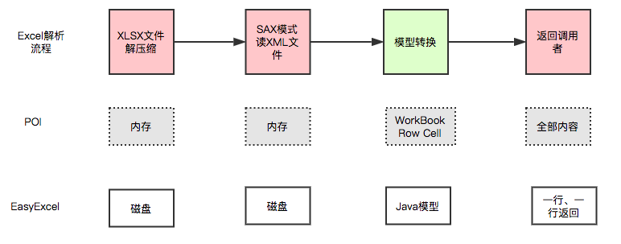
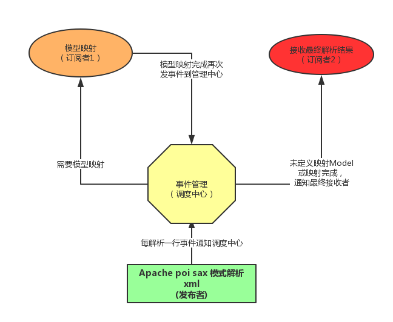

原文出处:本文由博客园博主写代码的木公提供。
原文连接:https://www.cnblogs.com/54chensongxia/p/11990312.html
原文连接:https://www.cnblogs.com/54chensongxia/p/11990312.html
easyExcel简介
Java领域解析、生成Excel比较有名的框架有Apache poi、jxl等。但他们都存在一个严重的问题就是非常的耗内存。如果你的系统并发量不大的话可能还行，但是一旦并发上来后一定会OOM或者JVM频繁的full gc。
easyExcel是阿里巴巴开源的一个excel处理框架，以使用简单、节省内存著称。
64M内存1分钟内读取75M(46W行25列)的Excel(当然还有急速模式能更快，但是内存占用会在100M多一点)

easyExcel能大大减少占用内存的主要原因是在解析Excel时没有将文件数据一次性全部加载到内存中，而是从磁盘上一行行读取数据，逐个解析。
下图是easyExcel和POI在解析Excel时的对比图。

easyExcel采用一行一行的解析模式，并将一行的解析结果以观察者的模式通知处理（AnalysisEventListener）。

上面简要介绍了easyExcel的特点和原理，关于easyExcel的其他问题可以先参考下这个文章。下面就通过代码来介绍下怎么使用easyExcel。
快速使用指南
文件上传读取Excel
下面通过一个读取用户信息的列子来展示下怎么使用easyExcel。
step1：创建用户信息类
@Data
public class UserInfo extends BaseRowModel {
@ExcelProperty(index = 0)
private String name;
@ExcelProperty(index = 1)
private int age;
@ExcelProperty(index = 2)
private String address;
}step2：创建AnalysisEventListener子类
/**
* 每解析一行会回调invoke()方法。
* 整个excel解析结束会执行doAfterAllAnalysed()方法
*/
//有个很重要的点 不能被spring管理,要每次读取excel都要new。
//这边就会有一个问题：如果UserInfoDataListener中需要用到Spring中的主键怎么办？
public class UserInfoDataListener extends AnalysisEventListener<UserInfo> {
Logger logger = LoggerFactory.getLogger(UserInfoDataListener.class);
//每次读取100条数据就进行保存操作
private static final int BATCH_COUNT = 100;
//由于每次读都是新new UserInfoDataListener的，所以这个list不会存在线程安全问题
List<UserInfo> list = new ArrayList<>();
//这个组件是Spring中的组件，这边推荐两种方法注入这个组件
//第一种就是提供一个UserInfoDataListener的构造方法，这个方法提供一个参数是UserInfoDataListener类型
//另外一种方法就是将 UserInfoDataListener 这个类定义成 UserService 实现类的内部类（推荐这种方式）
//private UserService userService;
@Override
public void invoke(UserInfo data, AnalysisContext analysisContext) {
logger.info("解析到一条数据:{}", JSON.toJSONString(data));
list.add(data);
if (list.size() >= BATCH_COUNT) {
saveData();
// 存储完成清理 list
list.clear();
}
}
@Override
public void doAfterAllAnalysed(AnalysisContext analysisContext) {
// 这里也要保存数据，确保最后遗留的数据也存储到数据库
saveData();
logger.info("所有数据解析完成！");
}
private void saveData() {
logger.info("{}条数据，开始存储数据库！", list.size());
//保存数据
//userService.save(list);
logger.info("存储数据库成功！");
}
}step3: 读取excel
public class EasyExcelDemo {
public static void main(String[] args) throws Exception {
InputStream fis = new FileInputStream("D:\\UserInfo.xlsx");
AnalysisEventListener listener = new UserInfoDataListener();
ExcelReader excelReader = EasyExcel.read(fis, UserInfo.class, listener).build();
ReadSheet readSheet = EasyExcel.readSheet(0).build();
ReadSheet readSheet2 = EasyExcel.readSheet(1).build();
excelReader.read(readSheet);
// 这里千万别忘记关闭，读的时候会创建临时文件，到时磁盘会崩的
excelReader.finish();
}
}
只需要上面3步就能进行Excel的读取了。
文件下载Excel
public class ExcelUtil {
public static OutputStream getOutputStream(String fileName, HttpServletResponse response)
throws Exception{
try{
fileName = URLEncoder.encode(fileName,"utf-8");
response.setContentType("application/vnd.ms-excel");
response.setCharacterEncoding("utf-8");
//此处指定了文件类型为xls，如果是xlsx的，请自行替换修改
response.setHeader("Content-Disposition", "attachment; filename=" + fileName + ".xls");
response.setHeader("Pragma", "public");
response.setHeader("Cache-Control", "no-store");
response.addHeader("Cache-Control", "max-age=0");
return response.getOutputStream();
} catch (IOException e){
throw new Exception("导出文件失败！");
}
}
public static void writeExcel(HttpServletResponse response, List<? extends BaseRowModel> list, String fileName,
String sheetName, Class clazz) throws Exception {
ExcelWriter writer = new ExcelWriter(getOutputStream(fileName, response), ExcelTypeEnum.XLS);
Sheet sheet = new Sheet(1, 0, clazz);
sheet.setSheetName(sheetName);
writer.write(list, sheet);
writer.finish();
}
}
在Controller中我们只要像下面这种方式调用就行了。
@RequestMapping(value = "/file/testExcelDownload")
public void testExcelDownload(HttpServletRequest request,HttpServletResponse response){
//以下信息从数据库中查出
List<ExcelInfo> excelInfos = new ArrayList<>();
ExcelInfo info1 = new ExcelInfo();
ExcelInfo info2 = new ExcelInfo();
excelInfos.add(info1);
excelInfos.add(info2);
info1.setIssuerName("name1");
info1.setRiskLevel("level1");
info2.setIssuerName("name1");
info2.setRiskLevel("level1");
try {
String fileName = "excelInfo";
String sheetName = "sheet1";
ExcelUtil.writeExcel(response, excelInfos, fileName, sheetName, ExcelInfo.class);
} catch(Exception e){
log.error("模板下载失败",e);
}
}
在导出Excel的部分，easyExcel还提供了自定义样式，插入表格，插入图片等其他功能，还有一个比较有意思的功能就是Excel模板填充的功能。详细的功能信息参考官方文档。